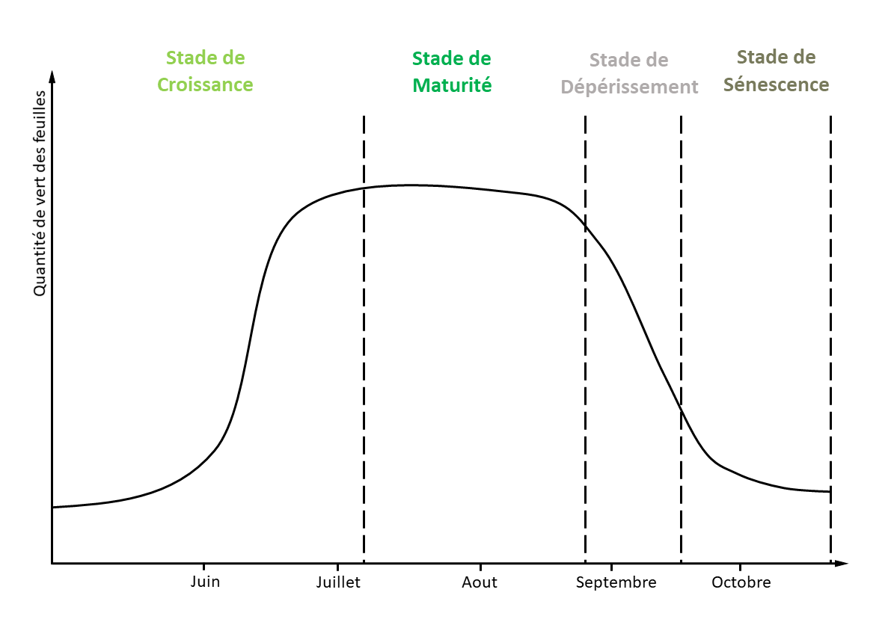
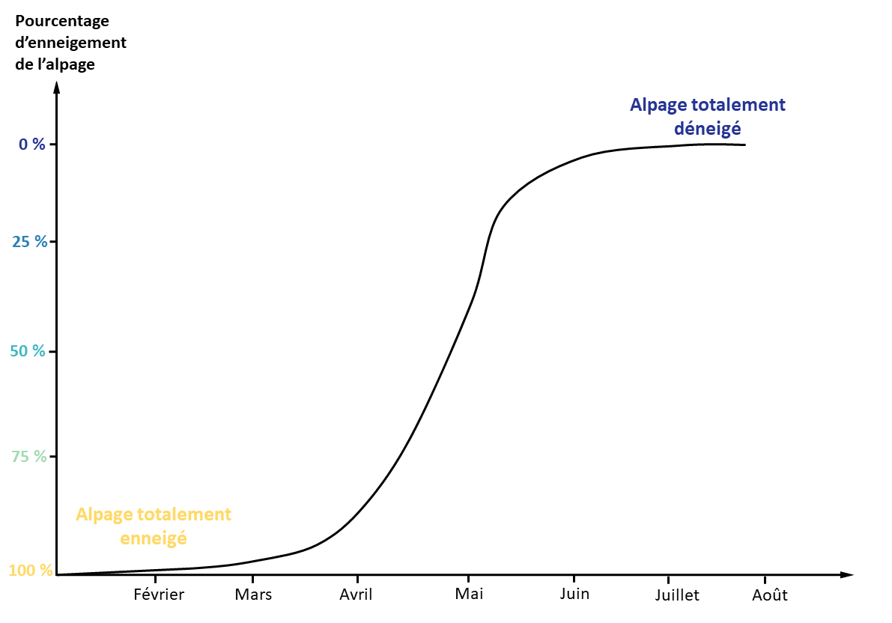

Du collier GPS aux indicateurs

Il est réalisé grâce à des colliers équipés de GPS programmés pour une acquisition toutes les 2 minutes. L’autonomie de la batterie permet de suivre le déplacement de l’animal pendant 3 à 4 mois. Il n’y a pas d’intervention à prévoir pendant la saison en estive. Il n’y a pas de transmission des données en temps réel. Avec 6 à 8 animaux équipés, il est possible de bien représenter les déplacements d’un troupeau ovin conduit. La méthode a été testée avec succès sur plusieurs alpages depuis trois ou quatre ans.
L’analyse des données GPS - par modèle de Markov caché - permet de déterminer trois comportements : repos, déplacement, pâturage. Le temps passé dans l’un ou l’autre de ces trois états et les localisations correspondantes sont analysés heure par heure pendant toute la saison.


Le suivi GPS haute fréquence permet d’obtenir des trajectoires très précises, ce qui rend possible le calcul de la distance et du dénivelé parcourus par les brebis équipées. Ces données peuvent servir de base pour estimer la dépense énergétique, à mettre en relation avec les pratiques pastorales.
Les informations sur les déplacements, les comportements et les chargements sont croisées avec d’autres données (enneigement saisonnier, carte d’habitats, phénologie de la végétation, fréquentation humaine etc). Il en résulte un ensemble d’indicateurs permettant de caractériser finement les modalités de la conduite en estive, ses variations au cours de la saison et entre années, ses liens avec différents niveaux de biodiversités (habitat, espèces, populations).

L'IRG (...), est une mesure du vert des feuilles obtenus par satéllite. Et permet de caractérisé la végétation a la fois en productivité en se base sur l'intensité de vert, mais également de comprendre ca phénologie avec la caractérisation des différentes phases.

Le SMOD (Snow Melting Out Day) est une mesure du statut enneigé ou non d’un pixel, dérivée d’observations satellitaires. Il permet d’obtenir la date de déneigement de chaque pixel de l’alpage et d’identifier à la fois la précocité (ou non) du printemps ainsi que le schéma de déneigement, en distinguant les zones qui se dégagent tôt de celles qui se dégagent tard.
